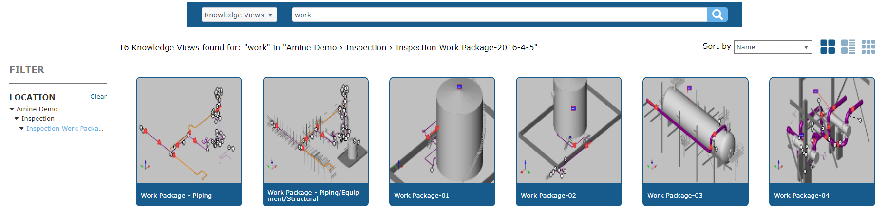
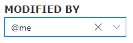
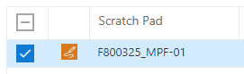

Search Knowledge Book
You can search for Knowledge Views, for Knowledge View Folders, or for Scratch Pad Pages.

Entering a search string populates a dropdown with search suggestions of knowledge views, folders or scratch pad pages containing the string you entered. The dropdown will display the first 5 search suggestions.
Click on one of the search suggestions or click the search button to perform the search. The search is case insensitive and will find all knowledge views, folders or scratch pad pages containing the string you entered.
Leaving the search string field empty and hitting the search button will return all available knowledge views, folders or scratch pad pages. |
To clear the search string, click the cross button displayed inside of the search control, next to the search button.
Search Results View
The search results are presented in the search results view. The page will only contain the results for the specified search type - Knowledge Views, Knowledge View Folders or Scratch Pad Pages. By default, the search results are sorted by name.

|
The search results page will only present data for which you have the view access right. |

Sorting
You can change the sort order of the search results by choosing a different sort field in the Sort by list:
- For Knowledge Views and Folders, you can sort the results either by Name, Location or Date Modified.
- For Scratch Pad search results, the sort options include: Scratch Pad (name), Knowledge View (name), Location and Date Modified.

View modes
By default, the page displays the search results via an icon view. Clicking on one of the view type icons lets you switch between different viewing modes:
View mode |
What is displayed in the view |
|
|
|
|
|
|


Regardless of the view mode, clicking on one of the search results will perform a navigation action:
- Clicking a Knowledge View folder will navigate to the content of the folder.
- Clicking a Knowledge View will open the Knowledge View.
- Clicking a Scratch Pad page will open the page.
In the grid view, hovering your mouse cursor above a Knowledge View icon Similarly, in a Scratch Pad grid, hovering the mouse above the Scratch Pad page icon |


Search Results Filter
You can fine-tune your search results by applying a filter to the results.
- Knowledge Views and Folders can be filtered by Location only.
- Scratch Pad page results can be filtered by Location, Modified By (user) and Date Modified.
Location
To filter by location, select the desired location from the location filter.
- You can filter by one location only.
- Selecting a location will automatically refresh the Search Results view.
- Click the Clear link to reset the location filter.

Modified By
To filter by the last modified user, select a user from the Modified By dropdown.
- The Modified By filter is only available for Scratch Pad search results.
- You can filter by one user only.
- Selecting @me will filter by the currently signed-in user.
- Selecting a user from the list will automatically refresh the Search Results view.
- Click on the cross button inside of the dropdown control to reset the user filter.

Date Modified
To filter by the last modified date, specify the date range in the Date Modified control.
- The Date Modified filter is only available for Scratch Pad search results.
- Clicking on the calendar icon inside of the control will bring up a date picker user interface, allowing you to select the start and end dates using a calendar control.
- Specifying a new date range will automatically refresh the Search Results view.
- Click on the cross button inside of the dropdown control to reset the date range filter.

Export to PDF
The Scratch Pad grid view offers the possibility to export one or more Scratch Pad pages into a PDF document. To enable the export function, check the check boxes next to the Scratch Pad pages that you'd like to export.

Once at least one check box is checked, the Export to PDF button appears above the search results.

Clicking the Export to PDF button initiates a download of the PDF document containing the selected Scratch Pad pages. Each Scratch Pad page will be rendered into a separate page in the PDF.
The layout of the generated PDF document can be customized by modifying the following PDF export options:
- Page Size determines which of the standardized paper sizes will be used when generating the PDF. The available Page Size choices include international (A4, A3, etc.) as well as North American (Letter, Legal, etc.) paper sizes, with A4 being the default.
- Page Orientation lets you specify the orientation of the pages added to the PDF.
- Auto (default) - automatically sets the orientation of each exported page based on the dimensions of the Scratch Pad page.
- Landscape - select to export all pages in Landscape orientation.
- Portrait - select to export all pages in Portrait orientation.
Sharing
You can share your search and filter criteria. Click the Share icon in the application header to copy or email the URL to perform the search and filter.